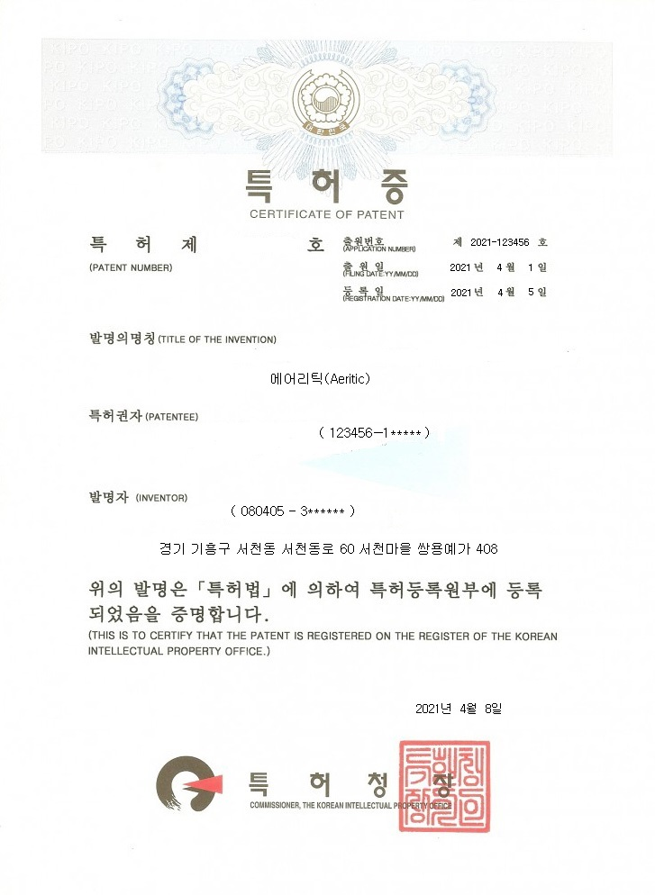

공기 마스크?

제작 과정
공기 마스크는 공기 압축 기계로 5번 가공하여 만든 "에어리틱(Aeritic) 필터"를 사용한 마스크입니다.
장점
편안함, 차카니 마스크는 공기로 이루어진 마스크로 그 어떤 마스크보다 통기성이 좋고, 가볍습니다.
투명함, 불투명한 일반적인 마스크와 다르게 공기로 이루어졌기에 반투명한 색으로 되어있습니다.
안전성, 공기의 입자가 비말 전파, 미세먼지, 황사를 막아줍니다.
일반적인 마스크로 따지자면 KF84의 성능을 갖고있습니다.
기계의 원리

먼저 내부의 엔진이 가동되며 순간적으로 주변의 공기를 빨아들입니다. 그 다음 공기를 압축합니다.
내부의 다른 물질을 빼냅니다. 그렇게 속이 비어있는 부드러운 젤리 형태의 물질이 만들어집니다.
그 젤리 속에 공기를 주입합니다.

위 과정을 거친 물질이 에어로겔입니다. 에어로겔은 98% 가량이 공기로 이루어진 고체입니다.
우린 에어로겔을 5번 압축했고, 결론적으로 반투명하고 얇은 막을 얻게되었습니다.
물질이 바로 에어리틱(Aeritic)입니다.
에어리틱을 이용하여 필터를 만들고, 마스크를 제작한 것이죠.
가격(한 장)
10000원 입니다.
남은 수량 : 판매중지

위 사진은 에어리틱의 특허장입니다.
사용 글꼴 - Google Noto Sans Kr
사용 이미지 출처 - Unsplash